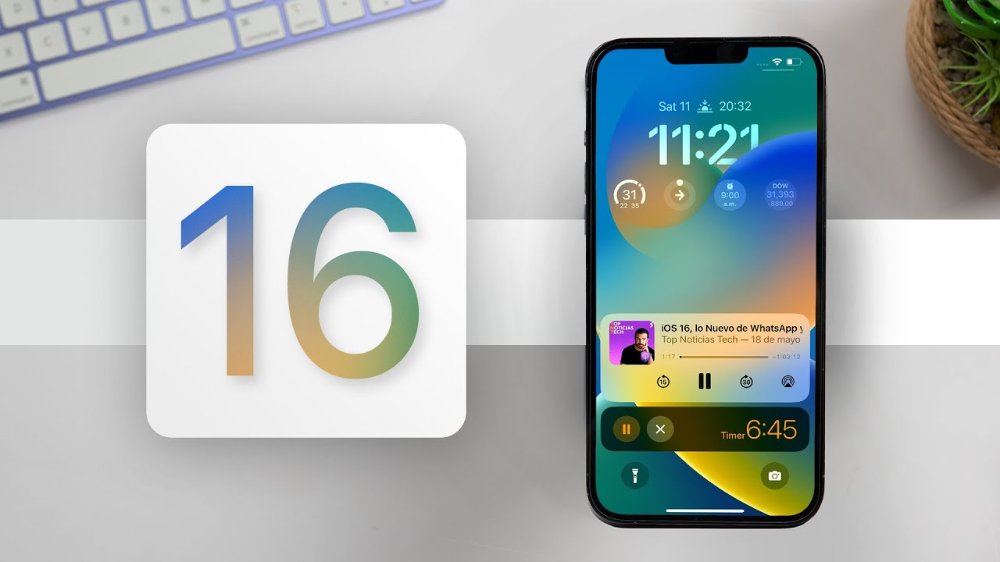

Introduction
iOS 16 was announced on June 6th, 2022. A little over a month later the first public beta has been released to the public. I have been running the beta since its release and I have been impressed with the update. This update brings new features and new life to your iPhone in several different ways! The new update will be supported up until the iPhone SE.

A new lock screen
One of the biggest new features is an update to the lock screen. The lock screen not only looks different but has some awesome new customization features. With this update you can have multiple different lock screens that you are able to fully customize to your liking. There has also been a change to the way you get your notifications. Notifications now rolling from the bottom of the screen instead of the top. So far, I have preferred this as the notifications are easier to reach on bigger iPhones.
Messaging
Apple has brought some realty neat updates to iMessages in iOS 16. The first being the ability to edit and unsend iMessages. You can also mark a message as unread if you are unable to respond in the moment.
Apple pay and Wallet
There have also been some interesting updates to Apple pay and wallet. Apple is introducing a new feature called, Pay Later. This feature allows you to make monthly payments on purchases directly in the wallet app, just like you would with a credit card. You can split purchases into four payments with zero interest or fees. Some other new features brought to Wallet is the ability to add your personal ID, share keys, view your receipts and track your Apple Pay orders.
Additional features
Some more stand out features include updates to CarPlay, Maps, Focus, Mail, and more! Another new feature I’m excited about is PassKeys. “Passkeys introduce a new sign-in method that is end-to-end encrypted and safe from phishing and data leaks. This makes passkeys stronger than all common two-factor authentication types.” – Apple.com. Apple is also introducing a new feature built into the health app called, Medications. This feature allows you to add the medication you take, track when you take them, the dosage and more!
Release Date
Apple has yet to give us an official release date. For now, all we know is that the update will be released in fall 2022. Previous updates have come in late September and early October so we can expect the same for iOS 16. If you want to get your hands on the beta you can visit this website to get enrolled in Apple’s beta program: Apple Beta Program